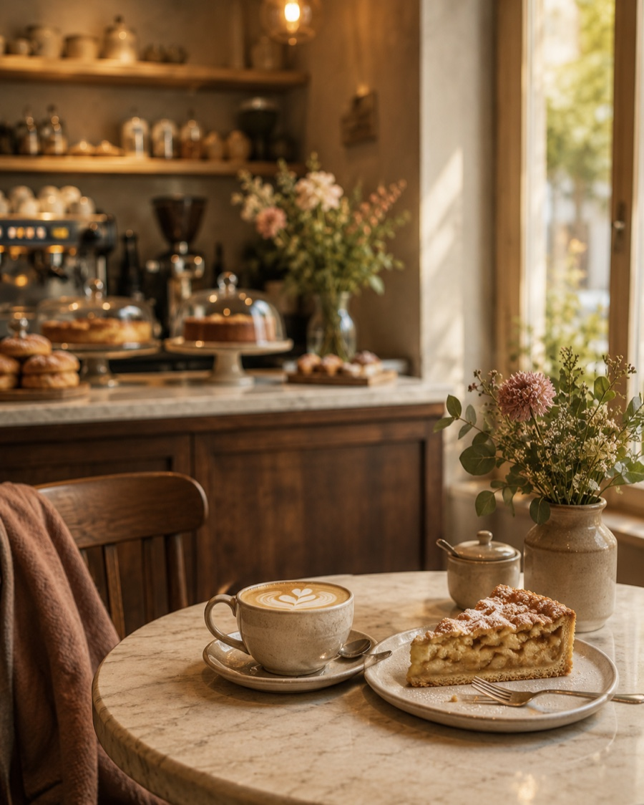
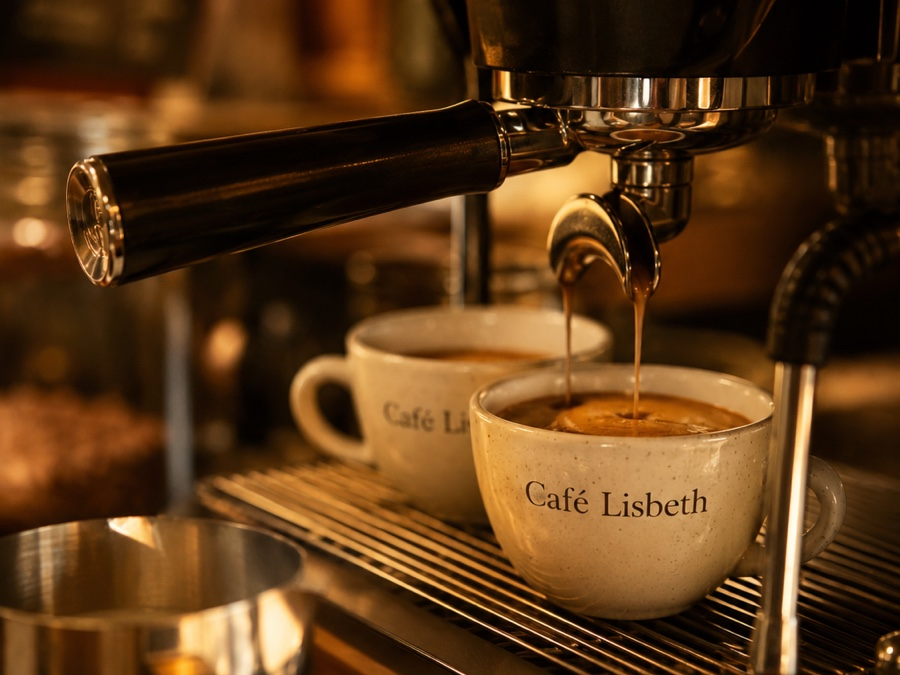
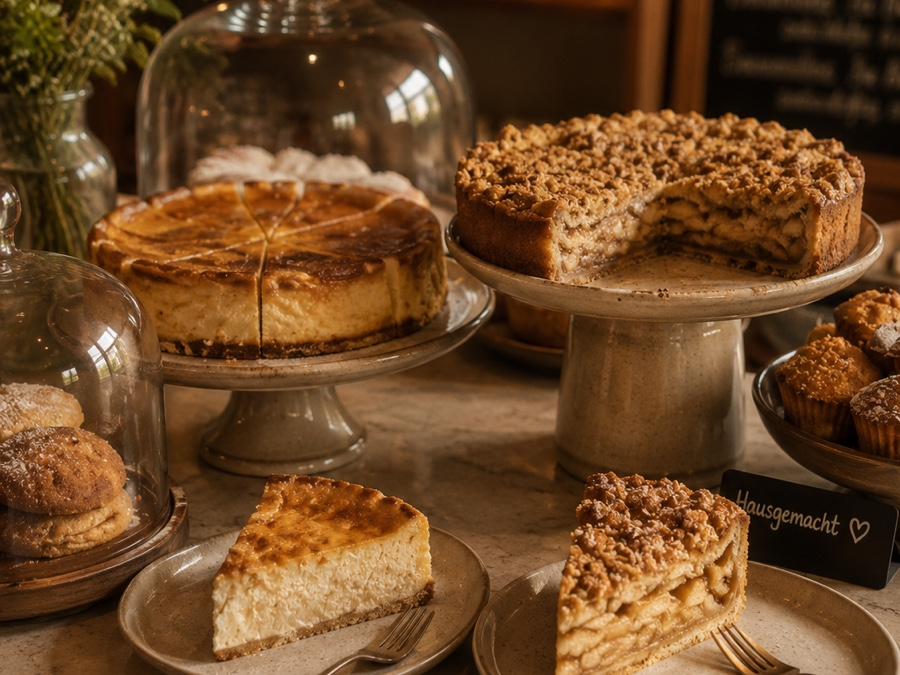
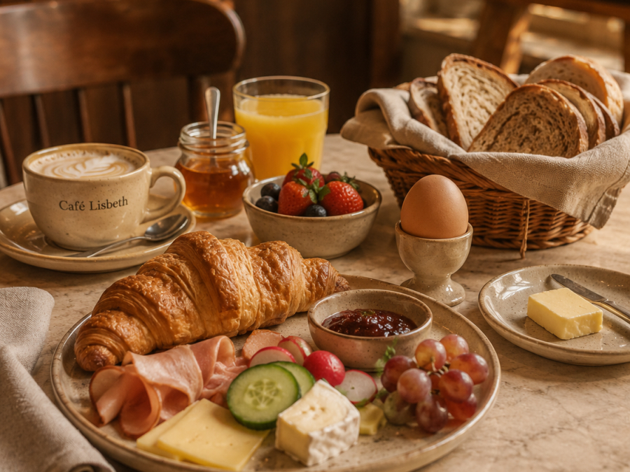
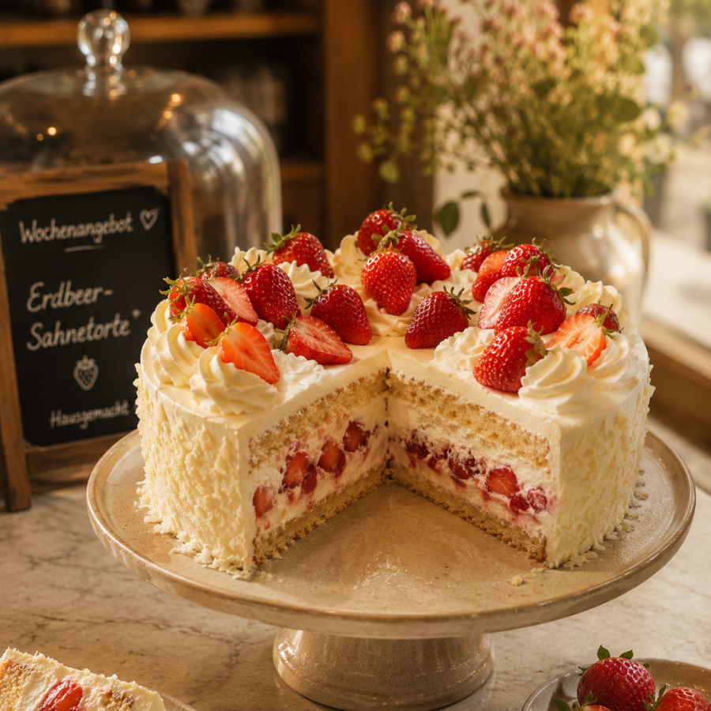
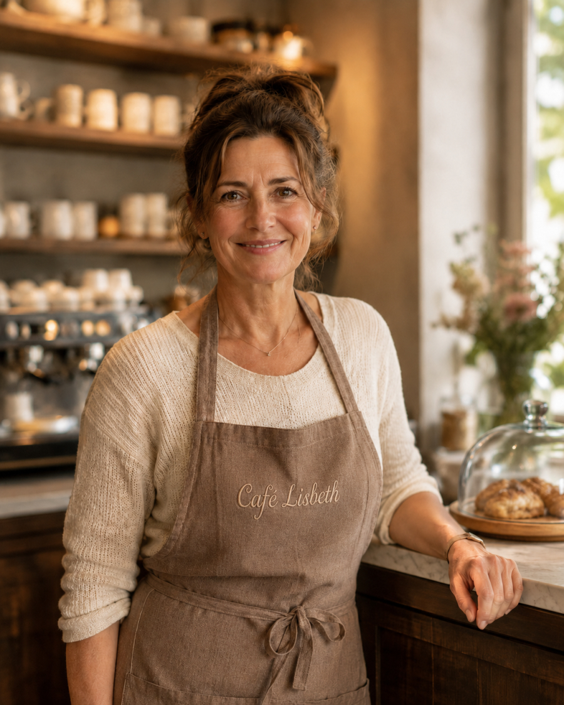

Hausgemachter Kuchen, frisch gerösteter Kaffee und eine Atmosphäre, in der man einfach ankommen kann. Bei uns gibt es keine Hektik, nur gute Zeit.

Was uns ausmacht
Von frühmorgens bis zum Nachmittagskaffee: Bei uns ist für jeden Hunger und jede Tageszeit etwas dabei.

Espresso, Cappuccino, Latte Macchiato. Dazu Tee, Säfte und selbstgemachte Limonade für alle anderen.
ab 2,50 €
Täglich frisch gebacken. Käsekuchen, Apfelkuchen, Sahnestücke und was die Saison gerade hergibt.
ab 3,20 €
Herzhaftes Frühstück bis 11 Uhr, wechselndes Mittagsangebot mit Suppe und zwei Gerichten täglich.
ab 5,90 €Frische Erdbeeren aus der Region auf einem luftigen Vanilleboden: saftig, nicht zu süß und jeden Tag frisch gebacken. Nur solange der Vorrat reicht.
Zur Kuchenkarte

Die Menschen dahinter
Lisbeth Müller eröffnete das Café 2019 mit einer einfachen Idee: ein Ort, an dem sich Menschen wohlfühlen: ohne Lärm, ohne Hektik, mit gutem Kaffee und noch besserem Kuchen.
Wann wir da sind
Warme Küche bis 30 Minuten vor Schließung. An Feiertagen können abweichende Zeiten gelten.
Wo wir sind